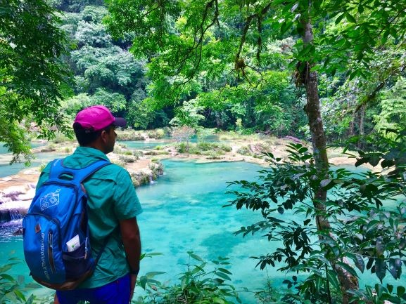

Si vas a viajar a Guatemala por tu cuenta y te estás preguntando qué lugares incluir, te recomendamos visitar estas alucinantes piscinas naturales muy cerca de Lanquín. Pero, ¿Qué ver y qué hacer en Semuc Champey y cómo llegar? Venga, te lo ponemos fácil. Aquí lo tienes todo. Tú encárgate de que no falte el bañador en el equipaje, porque sí, además de ver las pozas desde lo alto y alucinar con el paisaje, puedes bañarte.
